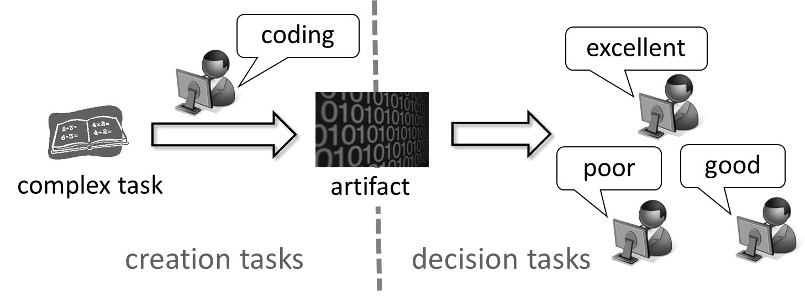

MSR CORE9 Funded Project
Machine Learning for Crowdsourcing Quality Control
Principal Investigator: Hisashi Kashima (Kyoto University)
1.
Project
Goal
It is becoming increasingly popular to use crowdsourcing marketplaces such as Amazon Mechanical Turk to request general public to work on human-intensive tasks including simple tasks such as image and text classification and complex tasks such as language translation, logo design, and program coding. In computer science research, crowdsourcing serves as a platform for human-machine hybrid computing to solve hard tasks for machines, but easier for humans.
However, one of the serious issues in crowdsourcing is the quality control problem of crowd workers, because variations in workersÅf abilities and existence of faithless workers result in uneven quality of the obtained results. A possible solution is to introduce redundancies; we request multiple workers to work on an identical task, and integrate their answers to obtain more reliable result. The integration can simply be done by taking voting or averaging, but recently, there is a series of active research on more sophisticated statistical quality control methods modeling generative processes of workersÅf responses and inferring the ÅgtrueÅh answer statistically. There have been proposed various generative probabilistic models such as ones considering worker abilities and task difficulties.
The goal of this project is to develop statistical crowdsourcing quality control methods for complex crowdsourcing tasks. Most of the existing methods only consider simple binary or multiple-choice questions where generative modeling of production processes is relatively easy; however, real-world tasks ask for less-structured or un-structured outputs such as item ordering, item enumeration, free-formatted texts (e.g. translations and program codes), and images (e.g. logo designs).
2.
Project
Members (Collaborator and Graduate Students)
Satoshi Oyama (Hokkaido Univ.), Yukino Baba (NII), Hiroshi Kajino, Toshiko
Matsui, Toshihiro Watanabe, Shunsuke Kajimura (Univ. Tokyo)
3.
Technical
Achievements
We developed statistical quality control methods for crowdsourcing tasks with various output formats other than simple multiple choices. For example, item ordering is one of the typical complex tasks that appear in e.g. ranking search results. We extended a generative model of orders to incorporate worker ability, and developed an efficient algorithm to estimate reliable orders [1].
We also developed a quality control method of less-structured output tasks for which it is not possible to develop generative models, such as logo designs and program codes [3]. For such kinds of tasks, standard statistical inference approaches based on generative models fail; therefore we developed a two-stage quality control model consisting of a creation stage and a decision stage, which avoids explicit design of a generative model of artifacts and allows us to choose the best artifact.

Figure 1. Two-stage quality control model
Another important kind of task is item enumeration tasks that request workers to enumerate possible answers as many as possible. A typical example is collecting positional information of POIs (points of interest) such as restaurants, hotels, and stations, which serves as fundamental information for location-based services. We developed a totally new quality control method for such tasks consisting of answer clustering and HITS-based reliability estimation [6].
Not limited to the efforts to broaden the applicability of statistical crowdsourcing quality control methods, we further improved the effectiveness of crowdsourcing in various specific contexts. For example, we showed additional information is useful for improving the quality. Concretely, by requesting workers to report self-confidence as well as their answers, we showed that we can improve the quality of integrated results by incorporating the additional information in generative models [4]. In addition, crowdsourced data is often used for predictive modeling using machine learning. We directly built in a quality control mechanism into the learning algorithm by extending our previous model (presented at AAAI 2012) to consider worker groups [5], as well as applications of quality control techniques to learn entity resolution [2] and crowdsourcing-based survey [7].
4. Publications (partially supported by this funding)
[1] Toshiko Matsui, Yukino Baba, Toshihiro Kamishima and Hisashi Kashima: Crowdordering, accepted by 18th Pacific-Asia Conference on Knowledge Discovery and Data Mining (PAKDD), Tainan, Taiwan, 2014. (to appear)
[2] Jingjing Wang, Satoshi Oyama, Masahito Kurihara and Hisashi Kashima: Learning an Accurate Entity Resolution Model from Crowdsourced Labels, In Proc. the 8th International Conference on Ubiquitous Information Management and Communication (ICUIMC/IMCOM), Siem Reap, Cambodia, 2014.
[3] Yukino Baba and Hisashi Kashima: Statistical Quality Estimation for General Crowdsourcing Tasks, In Proc. 19th ACM SIGKDD Conference on Knowledge Discovery and Data Mining (KDD), pp. 554-562, Chicago, USA, 2013.
[4] Satoshi Oyama, Yukino Baba, Yuko Sakurai and Hisashi Kashima: Accurate Integration of Crowdsourced Labels Using Workers°Ø Self-Reported Confidence Scores, In Proc. 23rd International Joint Conference on Artificial Intelligence (IJCAI), pp.2554-2560, Beijing, China, 2013.
[5] Hiroshi Kajino, Yuta Tsuboi and Hisashi Kashima: Clustering Crowds, In Proc. 27th AAAI Conference on Artificial Intelligence (AAAI), pp.1120-1127, Bellevue, Washington, USA, 2013.
[6] Shunsuke Kajimura, Yukino Baba, Hiroshi Kajino, and Hisashi Kashima: Planned Submission to HCOMP2014.
[7] Toshihiro Watanabe and Hisashi Kashima: Planned Submission to HCOMP2014.